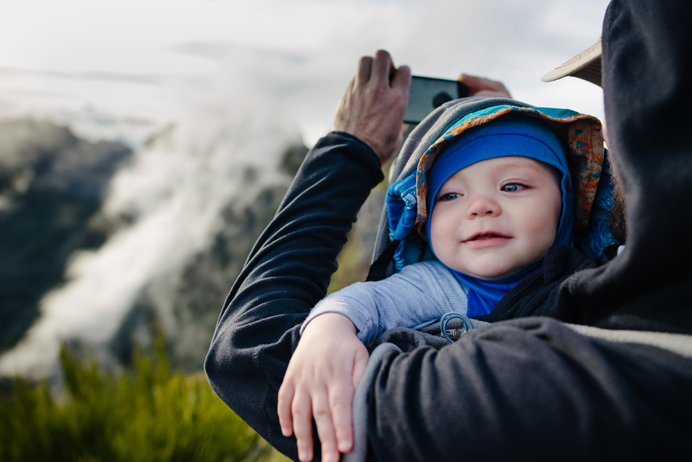
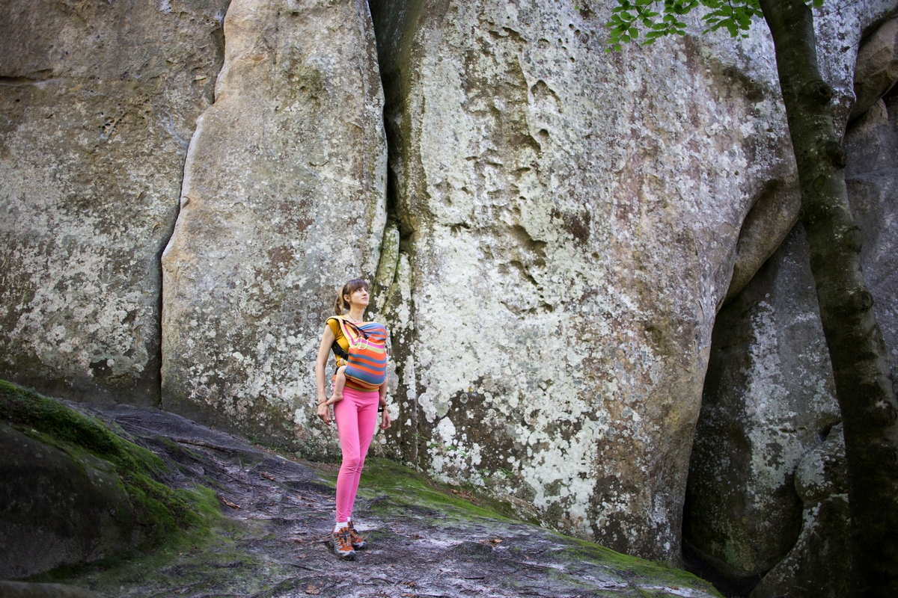
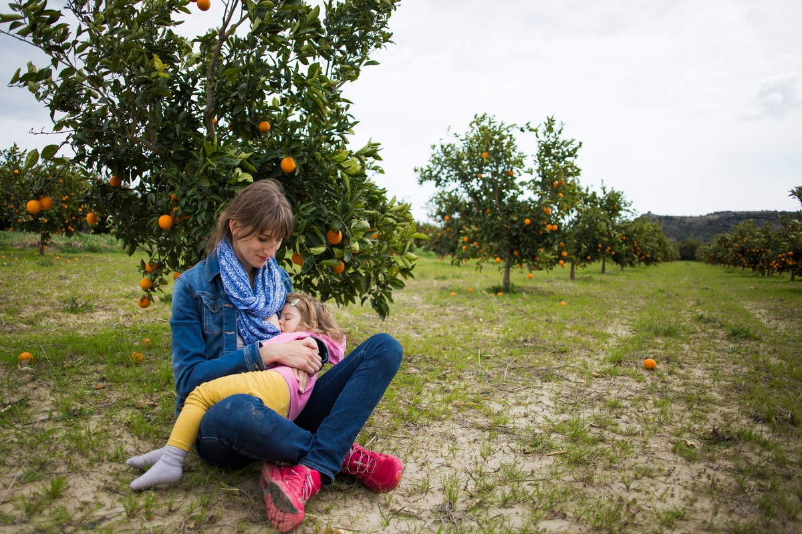
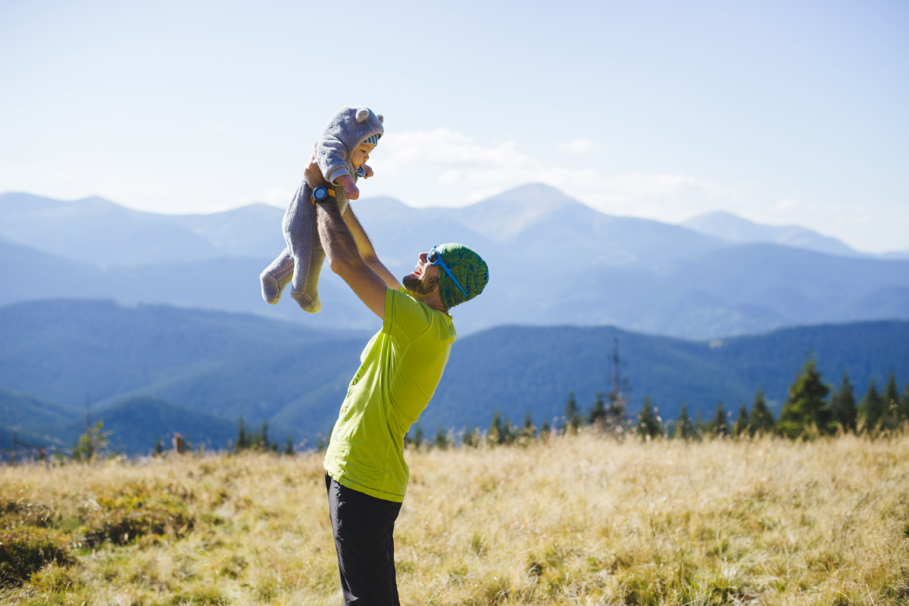
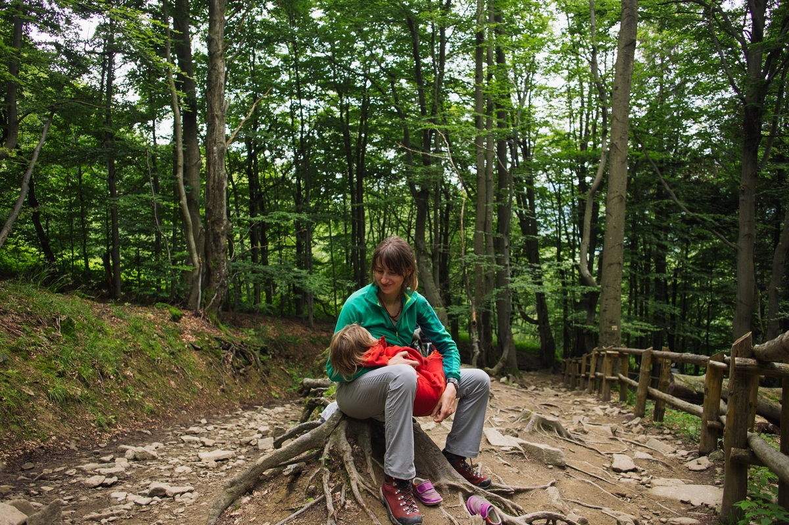
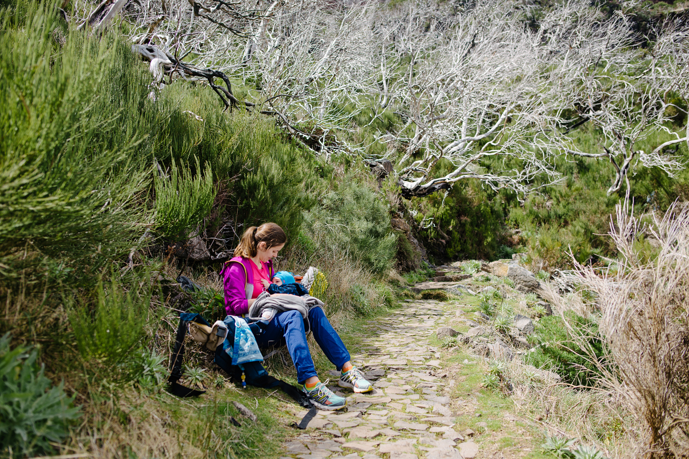

Грудне вигодовування та активний відпочинок
фото автора та Іри Дзвонковської

Нарешті прийшла тепла весна, а разом з нею сезон активного відпочинку і пікніків! Грудне вигодовування і ранній вік дитини зовсім не привід відкладати задоволення від мандрівок на невизначений термін! А радше навпаки - саме час для втілення неспішних та не екстремальних подорожей.
І щоб мандрівка годуючої мами із немовлям пройшла вдало, дамо кілька порад як підготуватися до неї.
Отже, підготовка:
Слінг чи ерго-рюкзак стане вам незамінним помічником у будь-якому випадку. Чи це хайкінг на природі чи оглядини пам’яток архітектури в містах. Якщо ви раніше ніколи не користувалися переносками, то краще завчасно навчитися намотувати їх і звикнути до них ще вдома. Не варто розраховувати, що зможете нести дитину в орендованому чи щойно купленому слінг-шарфі. Бо, по-перше, далеко не завжди вдається з першого разу намотати немовля, а по-друге - не факт, що дитина одразу вподобає такий вид прогулянки.

Ваш наплічник для походів має бути відрегульований заздалегідь вдома. Шлейки і стропи рюкзака не повинні тиснути на молочні залози.
Зручний одяг з секретом для гв дозволить вам комфортно і не привертаючи зайвої уваги годувати дитину, в т.ч. в слінгу, ресторані, в поїзді чи літаку.Якщо плануєте хайкінг з ночівлею, то подбайте про термобілизну для активної ходьби і змінну не тісну котонову білизну для ночівлі, яка дозволить шкірі вільно дихати.
Перегляньте мандрівну аптечку на сумісність ліків і антисептиків з грудним вигодовуванням на сайті e-lactancıa.org або ж укомплектуйте її за допомогою цього списку.
Захист від сонця для мами і дитини фактично універсальний не зважаючи на те, чи це похід на природу чи екскурсійна прогулянка містом: головний убір (капелюх, панама тощо), світлий одяг, сонцезахисні окуляри з уф-фільтром (у т.ч. і для дитини), сонцезахисний крем.

Питний режим. Разом з новими враженнями не забуваймо пити чисту воду і пропонувати дитині (якщо дитина віком більше 6міс.).
Для прикорму в дорогу вибирайте звичні для дитини продукти у відповідності до температурних умов подорожі і зберігання.
Догодовування. Якщо з певних причин, ви догодовуєте малюка зцідженим молоком або адаптованою сумішшю, то в умовах мандрівки на природу це зручніше робити за допомогою горнятка чи горнятка і ложечки. Якщо ви використовуєте систему догодовування біля грудей (снс), то найкраще запастися потрібними вам катетерами в достатній кількості, щоб не виникало незручностей з миттям. Всі елементи для догодовування необхідно мити чистою теплою проточною водою.
Спосіб догодовування має бути добре знайомий вашому малюку - як у звичних домашніх умовах.
За більш детальною інформацією щодо зціджування, зберігання та догодовування звертайтеся в індивідуальному порядку до консультантів гв.
Продуманий маршрут і альтернативні шляхи на випадок зміни погоди, поганого самопочуття та інших форс-мажорів додадуть вам впевненості у подорожі. Головне не мати великих очікувань у мандрівках з дітьми, тоді хороший настрій і враження забезпечені! Навіть, якщо ви годину будете дивитися як пасуться вівці чи літають метелики, а потім повертатися через зненацька початий дощ :)
Крім того, закладайте додатковий час в дорозі на годування. До прикладу, подорожуючи автівкою, доведеться робити доволі часті і довгі зупинки для годувань, оскільки дитина подорожує в автокріслі.

Найпоширеніші форс-мажорні обставини, які можуть виникнути у дорозі:
Лактостаз. Стресові ситуації, спека, різка зміна клімату, недостатнє вживання питної води, сильна втома, укус комахи, неправильне прикладання, а також перетискання молочної залози через незручну білизну чи вимушене годування однією груддю в дорозі є найчастішими причинами лактостазу під час подорожі.
Іноді у громадському транспорті доводиться давати дитині певну грудь з тих причин, щоб малюк не відволікався на інших людей або щоб ніхто не бачив як ви годуєтесь, тощо. І зазвичай у таких умовах проходить весь ваш маршрут. Тому ми радимо із собою мати легку шаль, хустку чи створити інтимний затишок за допомогою слінгу.
Часто бувають й такі ситуації, коли при зборах ми даємо дитині “зручну” грудь, а вільною рукою збираємо речі, доробляємо справи. А потім застрибуємо в поїзд чи літак і розуміємо - (привіт, лактостаз!) іншу грудь вже розпирає. Щоб уникнути такого неприємного “сюрпризу” - робіть собі нагадування, використовуючи резинку для волосся чи браслет на руку.
Отже, при будь-яких обставинах завжди пам’ятайте про зміну грудей! А якщо з вами вже сталася така халепа - не панікуйте. Ось посилання на матеріал з порадами, як допомогти собі при лактостазі.
Слідкуйте за кількістю сечовипускань дитини. Під час мандрівки дитина може частіше просити груди або ж навпаки - більше спати на свіжому повітрі і менше прикладатись. Тому варто стежити за наповненістю підгузків або кількістю сечовипускань дитини. Зазвичай це не менше 8-12 сечовипускань або 6-8 наповнених підгузків за день.

Страйк біля грудей дитиною зовсім не рідкість при зміні звичного для неї середовища, навіть якщо це одноденна мандрівка. Особливо це характерно дітям старше 2-3 місяців. Розглянемо цей страйк в аспекті мандрівки і при умові відсутності в дитини пляшки, соски, захворювання чи травми.
З розвитком дитина починає активно цікавитися світом довкола і може смоктати не так зосереджено як раніше, відволікатися на кожен звук, розглядати нове середовище. А зміни в звичному житті малюка, такі як: поїздки, нові люди, шумні місця, купання в морі чи іншій водоймі, - можуть стати для нього стресом.
Що робити в такому випадку? Перш за все необхідно збавити темп мандрівки. Якщо плавали в морі чи іншій водоймі - відмінити плавання. Годуйте в улюблених малюком позах, не обмежуйте тілесний контакт шкіра до шкіри. У денний час пропонуйте малюку груди в напівсонному стані і трохи підколисавши на руках чи за допомогою слінгу, або ж заколисуючи в затемненому приміщенні. Також можна спробувати “білий шум” перед початком прикладання до грудей. Це може бути шум води в душі, фен, пилосмок, витяжка на кухні або ж звичайне “шшш”, якщо ваша мандрівка не передбачає фена і витяжки на кухні :) Якщо нічний сон не спільний, то варто його організувати.
Головне в цій справі терпіння, спокій і пам’ятайте про кількість сечовипускань дитини (не менше 8-12). А також пункт вище альтернативні маршрути. Зрештою споглядання метеликів і годування дитини, заколисуючи під звуки “шшш” на природі, це краще ніж задушлива кімната в багатоповерхівці у місті :)
Алергічні прояви. Старайтеся не змінювати різко своє звичне харчування, якщо ви сама або дитина схильні до алергічних реакцій. Тому всі нові продукти, в яких сумніваєтеся варто пробувати малими дозами і у першій половині дня (1 новий продукт на 1 день), поступово збільшуючи дозу у наступні дні. Пам’ятайте, що алергічна реакція має накопичувальний ефект, тому вона може проявитися і за 3-4 дні вживання нового для вас продукту.
Загалом, мандрівки з немовлятами це не час на екзотичні кулінарні експерименти.

Ентеровірусні кишкові інфекції не є протипоказом для грудного вигодовування, а радше навпаки. При хворобі в мами - дитина отримує антитіла з грудним молоком. При хворобі в дитини - грудне молоко це боротьба з інфекцією і шлях до швидшого одужання.
При нездужанні звертайтеся за лікарською допомогою і, при потребі, за порадою до консультантів з гв щодо особливостей годування дитини при ентеровірусних кишкових інфекціях.
Якщо маму вкусив кліщ, головне не панікувати! Важливо якнайшвидше правильно видалити кліща і, по можливості, живого здати в лабораторію. Далі зв’язатися зі своїм терапевтом або інфекціоністом, звернутися в страхову. До прояснення ситуації з ймовірним зараженням можна:
1) зціджувати грудне молоко, пастеризувати його 30 хвилин або кип’ятити впродовж 2 хвилин і тільки тоді давати дитині;
2) продовжувати годувати з грудей. Ризик зараження залежить від того, наскільки швидко ви помітили і зняли кліща, а ще від регіону, в якому вас вкусив кліщ. Також має значення, чи є у вас відповідні щеплення.
До слова, достовірних даних про передачу кліщових інфекцій (йдеться про кліщовий енцифаліт, бореліоз, лихоманку Крим-Конго) від людини до людини через грудне молоко - немає. Крім того, лікування бореліозу і кліщового енцефаліту підбирається сумісне з грудним вигодовуванням.
І, наостанок, якщо укус кліща був в регіоні південніше від 50-тої паралелі північної широти, варто невідкладно звернутися по медичну допомогу.
Гарних вам мандрівок і нехай інформація про форс-мажорні неприємності не знадобиться!
Статтю редагувала Світлана Радішевська